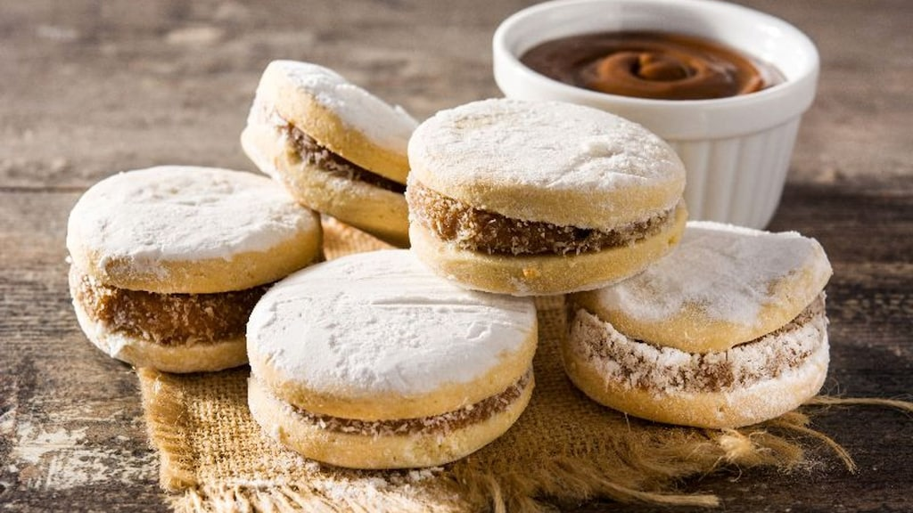
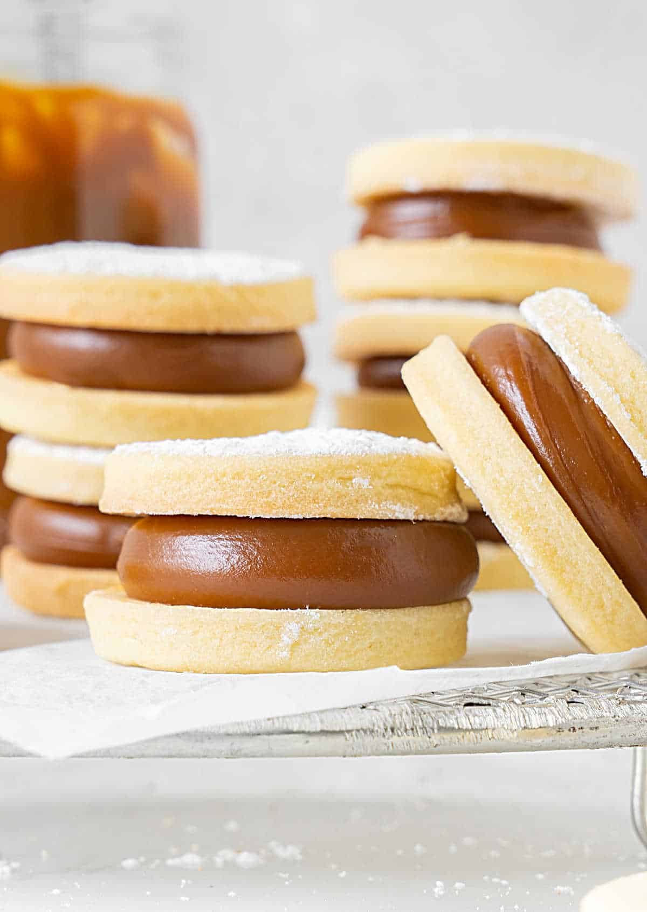

(“Dulzura instantánea en cada probada”).
• Porciones: 18 alfajores.
•Tiempo: 40 min.
• Dificultad: fácil.
-250 g harina (2 tazas).
-100 g maicena (1 taza).
-200 g mantequilla fría (1 taza).
-100 g azúcar glas (¾ taza).
-1 yema + 1 cdita esencia de vainilla.
-400 g dulce de leche para rellenar.
-Coco rallado para rebozar (opcional).
(breve):
1. Mezcla harina y maicena; incorpora mantequilla
en cubos hasta formar migas. Añade azúcar glas, yema
y vainilla; amasa rápido.
2. Estira masa a 4–5 mm y corta círculos. Hornea 8–10 min
a 180 °C (poca doradura).
3. Une pares con dulce de leche y pasa los bordes por coco
rallado si quieres.
Tips & presentación: resistentes y perfectos para caja de
regalo.
Foto sugerida: pila de alfajores mostrando relleno.
“Aquí la comida no se sirve: se comparte, se vive, se recuerda” - Universidad Panamericana.
 